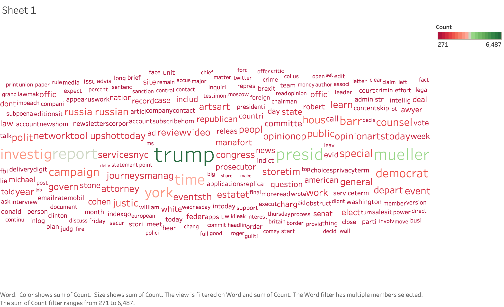

Data Intensive Computing - Assignment 2
Project on Mueller Report into investigating of President. Donald Trump
Top 10 Words
Before and after report submission
NYT Data
Twitter Data
CommonCrawl Data
